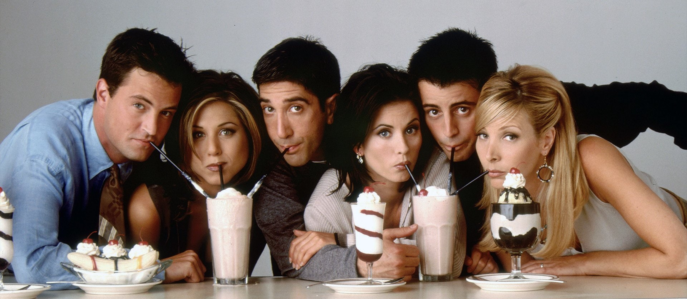

F . R . I . E . N . D . S
| 📺 Friends T.V Series 10 seasons . 1994 - 2004 . 234 episodes . 22m |
|

|
| 🎬 Sitcom Details |
| Country: |
United States of America |
| Producers: |
David Crane, Marta Kauffman |
| Genre: |
Comedy, Romance |
| Casts: |
Jennifer Aniston, Courteney Cox, Lisa Kudrow, Matt LeBlanc, Matthew Perry, David Schwimmer |
| Rating: |
TV-14/PG-13 (not suitable for children under 14 years old without the guidance of parents) |
| Description: |
"Friends" is a beloved sitcom that follows a group of six friends navigating life in New York City. With its relatable characters, witty humor, and heartwarming moments, the show has captivated audiences worldwide. Through its enduring popularity, "Friends" reminds us of the value of friendship, laughter, and shared experiences. |
| 🍿 Watch the Sitcom: Here ⭐ Review the Sitcom: Here 📧 Email Me: Here |